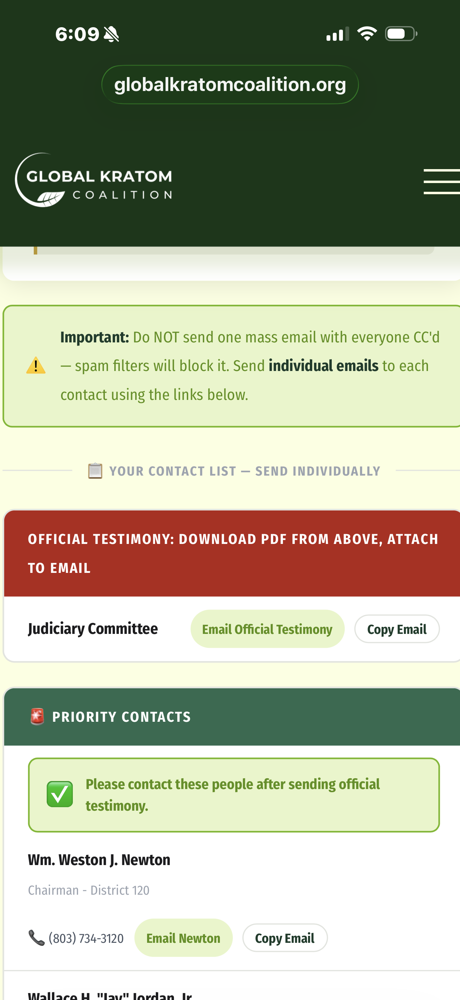
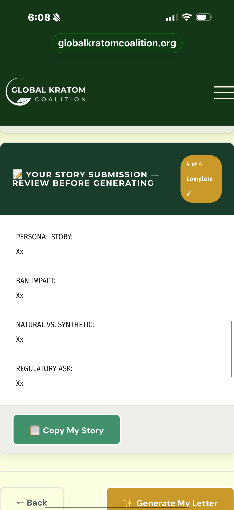
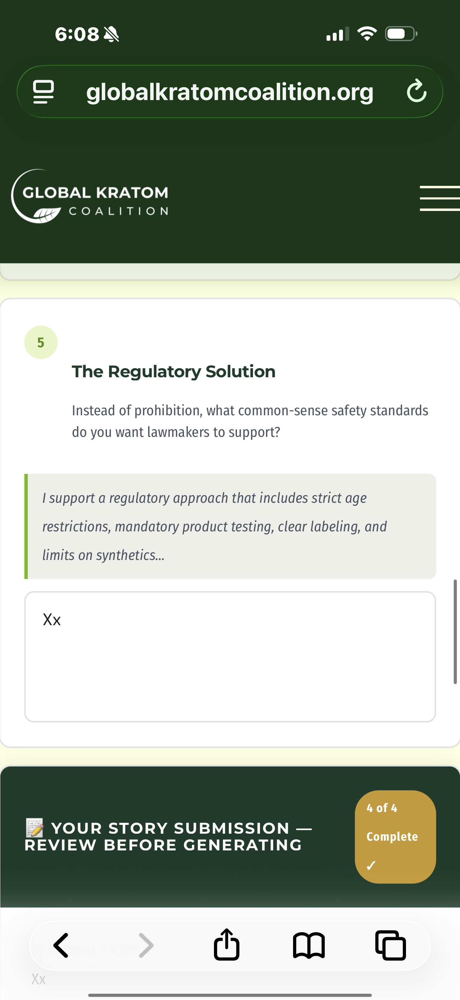
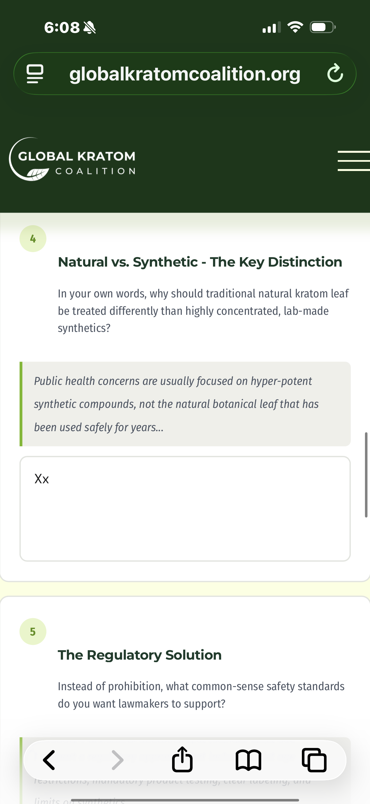
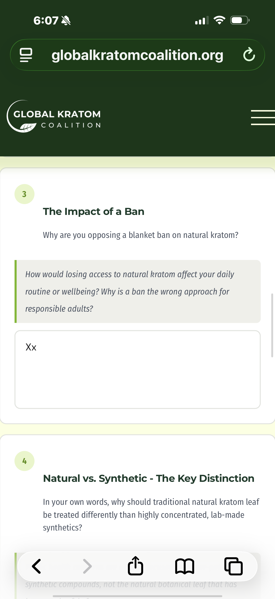
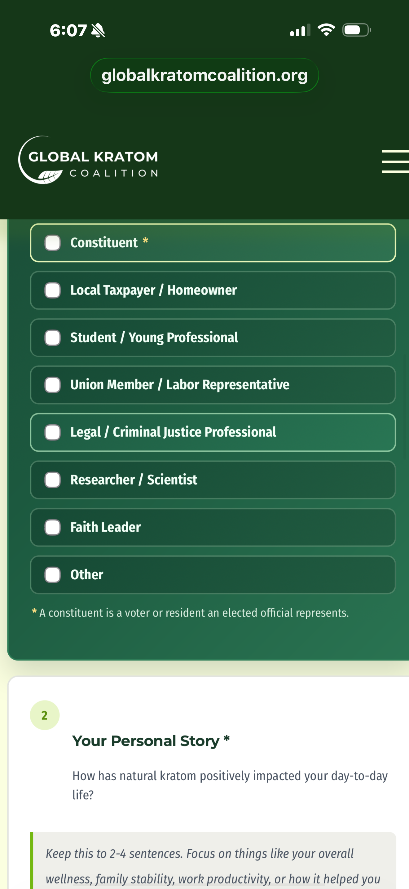
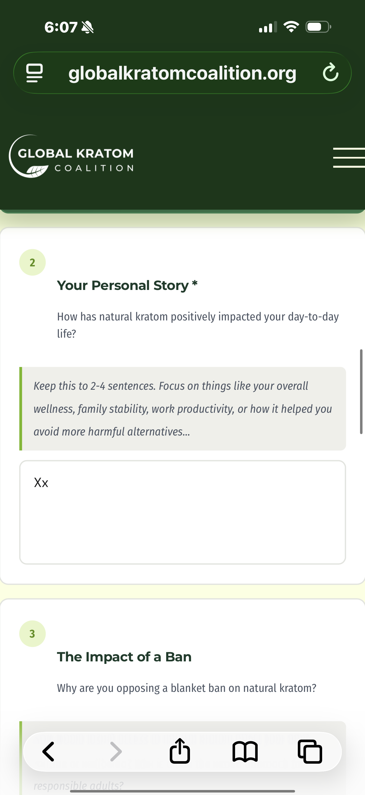
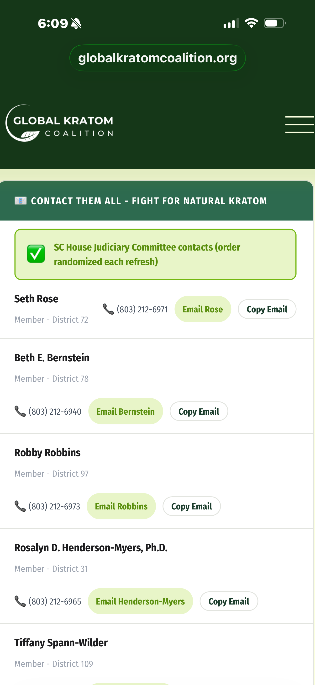

Inside the Kratom Advocacy Machine:
One Click, Unlimited “Public Opinion”
In theory, constituent emails offer genuine, independent perspectives. But what happens when an online tool generates near-identical letters from little more than a placeholder? The Global Kratom Coalition’s advocacy engine promises to amplify voices — yet our analysis shows it produces uniform, policy-shaped responses even when users supply almost nothing.
The letter below was produced by the GKC tool after entering minimal input. See how the final output contains pre-written arguments, regulatory language, and a fully formed “personal story.”

🧪 The “Xx” test: almost nothing in, polished letter out
The advocacy interface asks for personal stories, ban impact, and regulatory views. To test authenticity, we entered only a single placeholder: “Xx” in each field — no anecdote, no genuine experience. The result? A complete, structured letter with consistent talking points appeared, ready to send to legislators.


Despite empty fields, the generated letter contained a coherent narrative: natural kratom improved daily wellness, prohibition would be harmful, and regulation should focus on synthetic compounds. The output is procedurally built, not organically written.
📸 Identical framing, automated consistency
The tool’s language isn't accidental. It reflects strict editorial guidelines baked into the interface — avoiding certain phrases while promoting a “natural vs. synthetic” distinction. Below: the platform’s own rewriting rules.

🌀 The natural vs. synthetic pivot — fixed narrative
Every letter, regardless of what the user writes, emphasizes a sharp divide between traditional kratom leaf and synthetic 7-OH. The prompt itself (input4.png) guides the user toward a pre-defined argument. This consistency is not organic — it’s structured.


🎭 Identity anchors and narrative sculpting
Before writing, users select from a list of “Identity Anchors” — Parent, Veteran, Taxpayer, etc. This allows the system to tailor the letter’s opening while maintaining core messaging. But it also creates the impression of diverse, grassroots testimony when the underlying architecture stays identical.


Even with placeholder data, the final letter includes:
• A "personal benefit" statement structured as wellness & productivity
• Opposition to blanket prohibition
• Explicit differentiation between natural leaf and synthetic 7-OH
• A regulatory framework (age verification, testing, labeling)
• A call to action targeting Judiciary Committee members.
📬 Coordinated campaigns: the judiciary contact machine
The tool includes ready-made contact lists for state legislators — often the House Judiciary Committee. Each “Email [Lawmaker]” link opens a pre-filled message with identical talking points. This transforms individual advocacy into a scalable, uniform pressure campaign.

⚠️ Why this undermines authentic testimony
Lawmakers rely on constituent correspondence to gauge real-world concerns. But when thousands of almost identical letters — generated from a central template — flood their offices, the signal becomes noise. The appearance of grassroots support may simply be the output of a well-oiled messaging engine.
“The letter reads as if it came from an individual with lived experience — but the substance of the message does not come from the user. It comes from the system.”
📊 The consistency problem in practice
When we compared multiple outputs generated from different placeholder entries, the core arguments remained virtually identical: praise for natural kratom’s safety, insistence on avoiding a ban, and demands to target only “synthetic 7-OH”. The same phrases appear across letters from supposed “different constituents.”
- Standardized narrative: Personal wellness → warning against prohibition → regulation over restriction → synthetic risk distinction.
- Persistent language: “Concentrated synthetic 7-OH,” “natural botanical leaf,” “common-sense safety standards.”
- Automated structure: The letter always contains four distinct sections mirroring input prompts, even when those prompts are blank.
🧠 What legislators should consider
Before weighing these messages as authentic grassroots testimony, three questions help separate organic advocacy from automated campaigns:
- Was this written by the constituent? Or generated by a template that fills in the blanks regardless of real input?
- Does it reflect individual experience? Or a standardized political narrative that repeats verbatim across hundreds of emails?
- How many near-identical messages arrived? Volume does not equal authenticity when the source is a scale-driven tool.
This is not about whether kratom advocates have valid positions. It is about how digital tooling manufactures the illusion of organic demand. When a single click produces a “personal” story out of thin air, the democratic process loses fidelity.
📌 Final observation: appearance vs. reality
The Global Kratom Coalition’s platform does not fabricate false statements — it fabricates consistency. It turns minimal effort into polished, persuasive letters, erasing the messy variability of true human testimony. That distinction matters for any policymaker trying to hear actual voices, not just well-engineered outputs.
Download the full example letter: The PDF linked at the top of this analysis was generated using only placeholder data (“Xx”). It contains sophisticated policy language, a clear regulatory ask, and a personal narrative — written entirely by the system, not the user.
Open GKC Automated Letter →
⚖️ “If the process is automated, the appearance of grassroots support deserves a closer look. Are you hearing from constituents, or from a system designed to speak for them?”
Analysis by MAHA — documenting structured advocacy techniques.